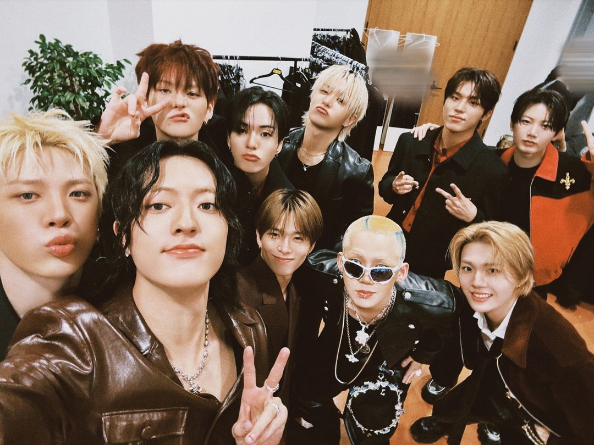

Besides serving as a college student, I am also a big fan of KPOP, and TREASURE is my favorite KPOP group.

TREASURETREASURE is a South Korean boy group under YG Entertainment. Since their debut in 2020, they have gained popularity both in Korea and internationally because of their strong performances, diverse music styles, and engaging personalities. The group currently consists of ten members and continues to attract a large fanbase around the world.Before their debut, the members participated in a survival program called YG Treasure Box. The show was created to select trainees who would become YG Entertainment’s next boy group. Throughout the competition, the trainees demonstrated their singing, dancing, and performance abilities while competing for a debut opportunity. After months of evaluations and challenges, the final members were chosen, and TREASURE officially debuted on August 7, 2020.TREASURE’s debut song, “BOY,” introduced the group with a powerful concept and energetic performance. The song highlighted the members’ youthful image and showcased their talent in both singing and dancing. Following their debut, TREASURE released many successful songs that explored different musical styles, ranging from energetic dance tracks to emotional ballads.In addition to their music, TREASURE is well known for its variety content called TREASURE MAP. This series allows fans to see the members’ personalities beyond the stage. The episodes feature games, challenges, travel activities, and team competitions, creating many memorable and humorous moments. Through this content, fans can better understand the members’ friendships and teamwork, which has become one of the reasons for the group’s popularity.Among all the members, my favorite is Park Jeongwoo. As one of the group’s main vocalists, he is recognized for his powerful voice and emotional singing style. I admire not only his vocal ability but also his cheerful and energetic personality. His sense of humor and positive attitude make him stand out among the members.My favorite TREASURE song is “SLOWMOTION.” Unlike the group’s more energetic title tracks, this song has a warm and emotional atmosphere. The gentle melody and meaningful lyrics create a comforting listening experience. I believe the song effectively showcases the members’ vocal abilities and emotional expression, which is why it remains my favorite track.In conclusion, TREASURE has developed into one of the most promising K-pop groups of their generation. Through their music, performances, and variety content, they have built a strong connection with fans worldwide. Their journey from YG Treasure Box to becoming successful artists demonstrates both their talent and dedication.